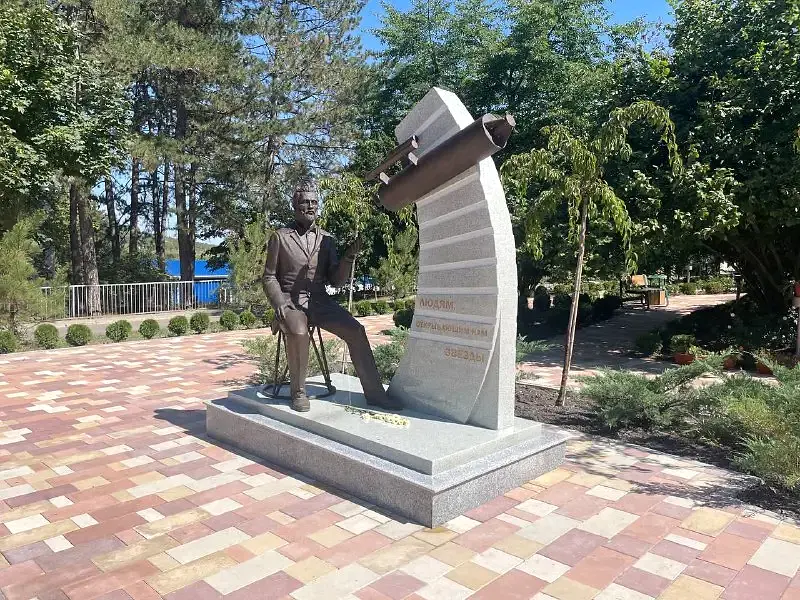

Исходные данные
Художественная концепция и требования к будущему объекту.
 ТехнопаркДизайн и инжинирингОбсудить задачу
ТехнопаркДизайн и инжинирингОбсудить задачу Скульптура и макетирование
Подготовить цифровую и физическую основу для памятника астрономам — от формы до масштабного воплощения.
Обсудить похожую задачу
От замысла к результату
Художественная концепция и требования к будущему объекту.
Создана и реализована скульптурная композиция; публикация проекта доступна в официальном канале Step3D.
Проект на странице Технопарка РГСУ . Описание и фотографии сохранены из портфолио команды STEP_3D.
Открыть публикациюДетали и этапы
Опишите назначение и ограничения. Вместе определим технологию и первый результат.
Обсудить с лабораторией Все проекты